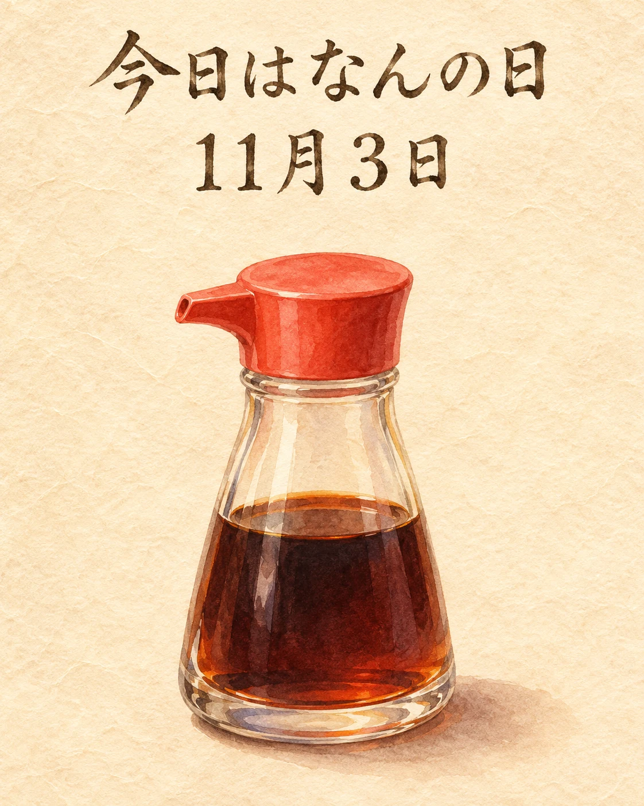

11月3日は「調味料の日」です🍁
日本の伝統調味料を見直し、和食をあらためて考える日として、日本野菜ソムリエ協会が制定しました。
醤油や味噌、酢など、日々の和食を支える調味料。味を調えるだけでなく、香りや余韻にも、それぞれの持ち味があります。
旬の素材に、どの味をどれほど重ねるか。いつもの一皿を支える小さなさじ加減にも、日本の食文化が息づいています。
季節の味わいとともに、心ほどけるひとときをお過ごしください✨
調味料と和食のつながり
毎年11月3日の「調味料の日」は、伝統的な調味料と和食の価値を見つめ直す記念日です。醤油を代表モチーフに、毎日の食卓を支える味の文化を紹介しています。当店の使用商品・当日の料理・調味料選手権への参加や受賞を案内するものではありません。
出典：日本野菜ソムリエ協会「調味料選手権」、日本地方創成協会「調味料選手権について」、JAF Mate Online「11月3日は調味料の日」（2026年11月3日確認）。